東京大学 2008年 理科 第1問
問題
座標平面上の点(x,y)を(3x+y,-2x)へ移す移動fを考え、点Pが移る行き先をf(P)と表す。fを用いて直線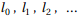を以下のように定める。
は直線3x+2y=1である。
点Pが 上を動くとき、f(P)が描く直線を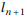とする(n=0,1,2,...)。
上を動くとき、f(P)が描く直線を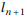とする(n=0,1,2,...)。
以下を1次式を用いて と表す。
と表す。
(1) 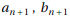を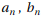を用いて表わせ。
(2) 不等式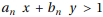が定める領域を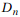とする。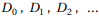すべてに含まれるような点の範囲を図示せよ。
解答
(1)
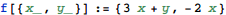
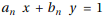をfによって移した直線の式は以下。
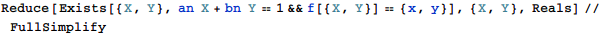
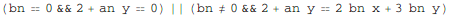
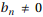のときの式に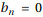を代入すると のときの式と一致するので、求める関係式は
のときの式と一致するので、求める関係式は
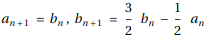
(2)
 の一般項を求める。
の一般項を求める。
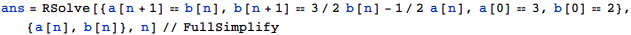
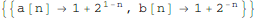
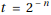とおくと、n≥0だから0<t≤1であり、 。
。
従って求める領域はReduceを用いて
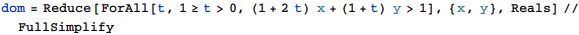
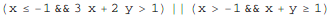
従って求める領域は下図(太実線部は含み、細実線部および点(-1,2)は含まない)。
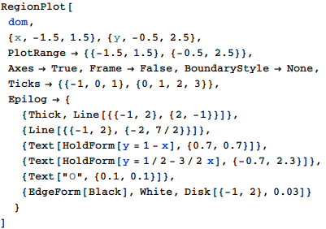
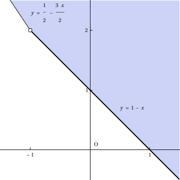
補足・感想
(2) は

としても正しい解が求まらなかった(WolframAlphaなら正しい解が求まる)。
https://www.wolframalpha.com/input/?i=Reduce%5BForAll%5Bn%2Cn%3E%3D0%2C%281%2B2%5E%281-n%29%29x%2B%281%2B2%5E-n%29y%3E1%5D%2C%7Bx%2Cy%7D%2CReals%5D&lang=ja
またとおいて解いた部分は、離散値から連続値に変えても結果が変わらないことは直感的には分かるが、説明が必要かもしれない。